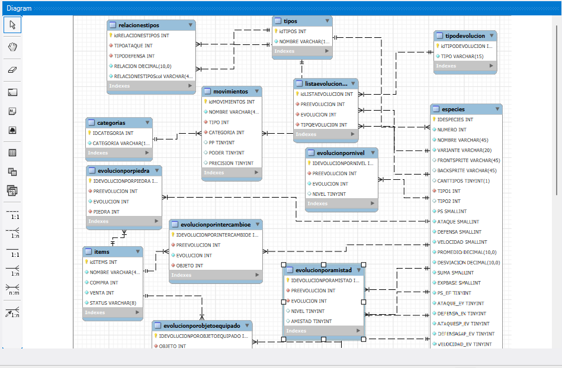
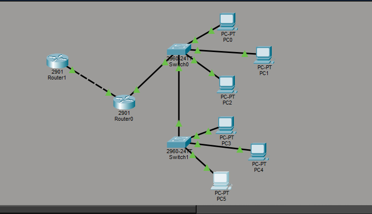

Mi Curriculum
Nombre: Daniela Alejandra Briones Robles.
Fecha de nacimiento: 15 de abril de 2002.
Edad: 23 años.
Lugar de nacimiento: Caracas, Venezuela.
Lugar de Residencia:Portoviejo, Ecuador.
Universidad: Universidad Técnica de Manabí.
Carrera: Ingeniería en Tecnologías de la Información y Comunicación (5to semestre)
Proyectos
Es un diagrama de una base datos de pokemon que realice en un curso de Base de Datos.
Diagramita pokemondb

Ésta es una practica que hice en el programa
Cisco Packet Tracert para una tarea
Taller practico

Carrera Estudiantil
✅ Primaria y Secundaria aprobadas.
✅ Curso: “De cero a experto en Base de Datos”.
✅ Actualmente cursando 5to semestre de Ingeniería en TIC.